Todo tu oficio en un solo archivo
Domingo reúne lo que suele estar regado en cuadernos, carpetas y programas distintos: escribir, construir el mundo, revisar, estudiar, vivir, publicar y aprender. Lo sencillo aparece primero; lo avanzado, cuando lo necesitas.
Un editor tranquilo, y tu obra a la vista
Escribe con formato o en Markdown. Ordena capítulos y escenas como fichas, en esquema o en tablero, y abre dos textos lado a lado. ¿Ya tienes un manuscrito? Tráelo de Word, PDF, Markdown o Scrivener y Domingo propone sus capítulos, personajes y lugares.


Quién es quién, dónde y cuándo
Personajes, lugares y objetos con fichas propias. Conéctalos en un mapa, ordénalos en el tiempo, dibuja el territorio y arma el árbol familiar.


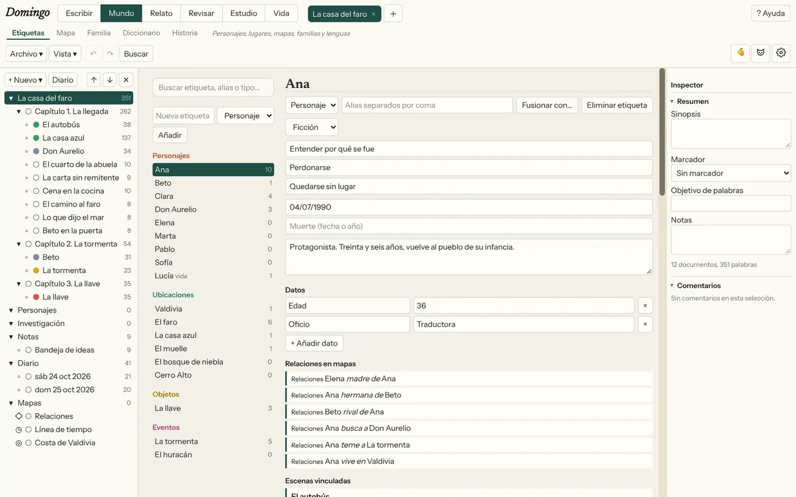
La forma de la historia
Mide la tensión de cada escena, sigue la presencia de tus personajes y lleva el registro de la historia en una tabla que se llena sola.
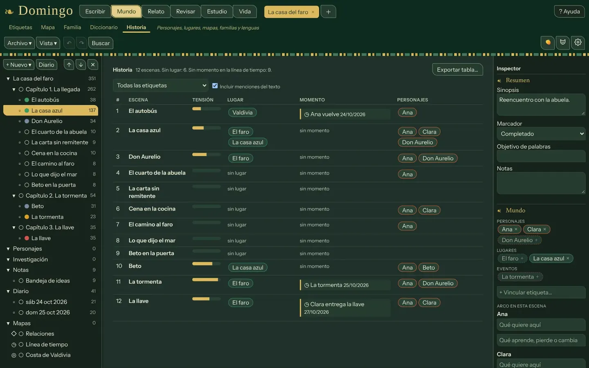
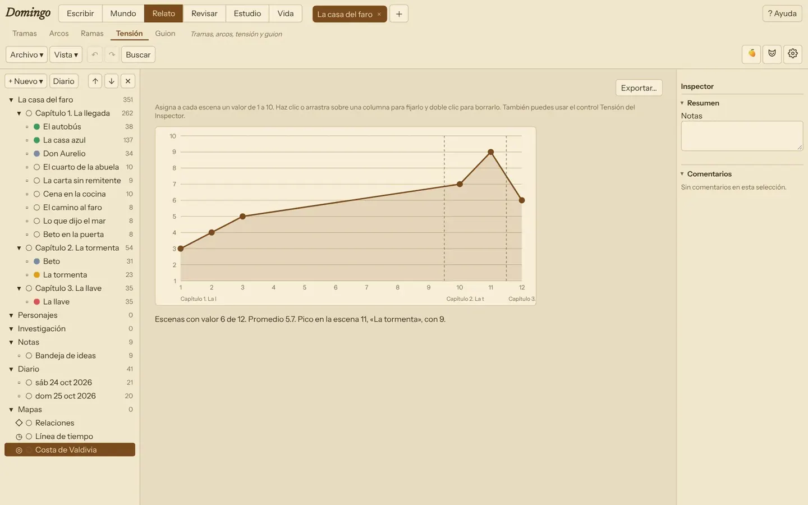

Revisa con criterio, y con otros
Corrección en español, estilo, repeticiones, ritmo y legibilidad. Manda tu texto a revisión como página web o como Word: quien lo lee comenta sin cuenta, y sus notas llegan a tu manuscrito. Para poesía, cuenta sílabas, mide versos y encuentra la rima.
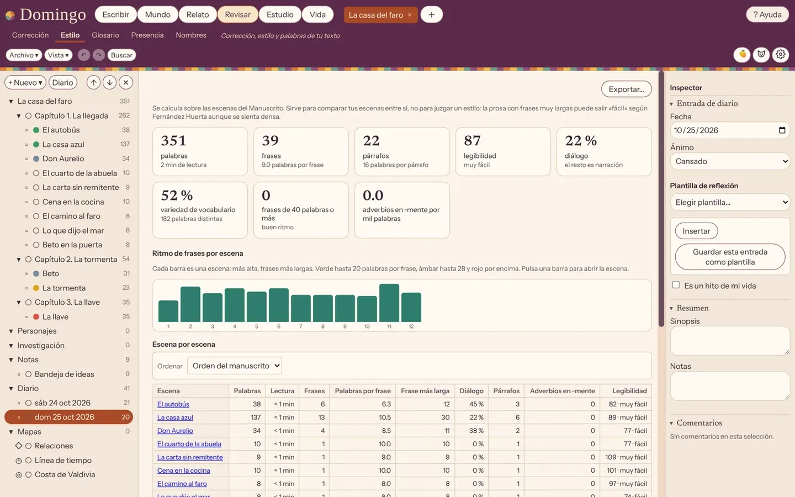

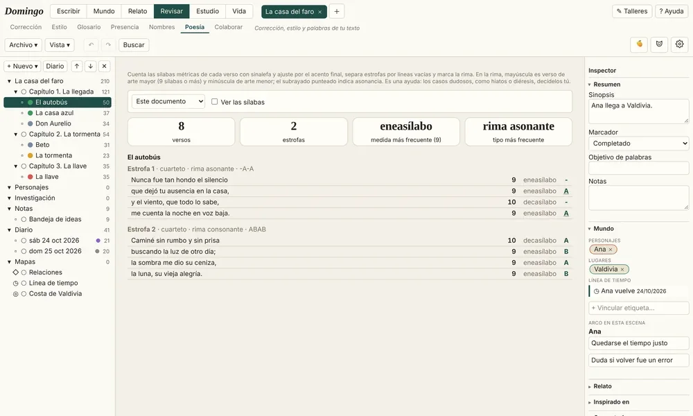
Tu tesis, de la pregunta a la entrega
Lee y subraya PDF dentro de la app, guarda tus fuentes y cita en APA, MLA o Chicago. Planea el trabajo por fases, haz una ficha de lectura por fuente y revisa la lista de entrega antes de mandarlo.
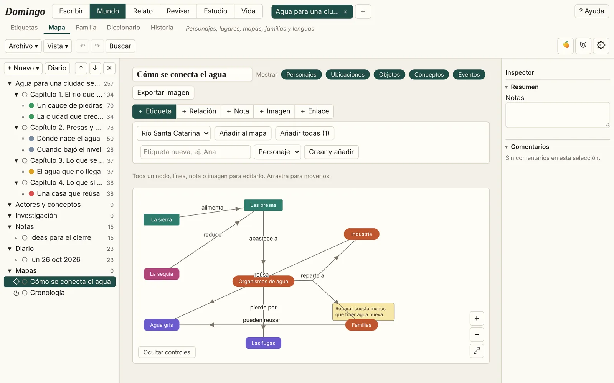

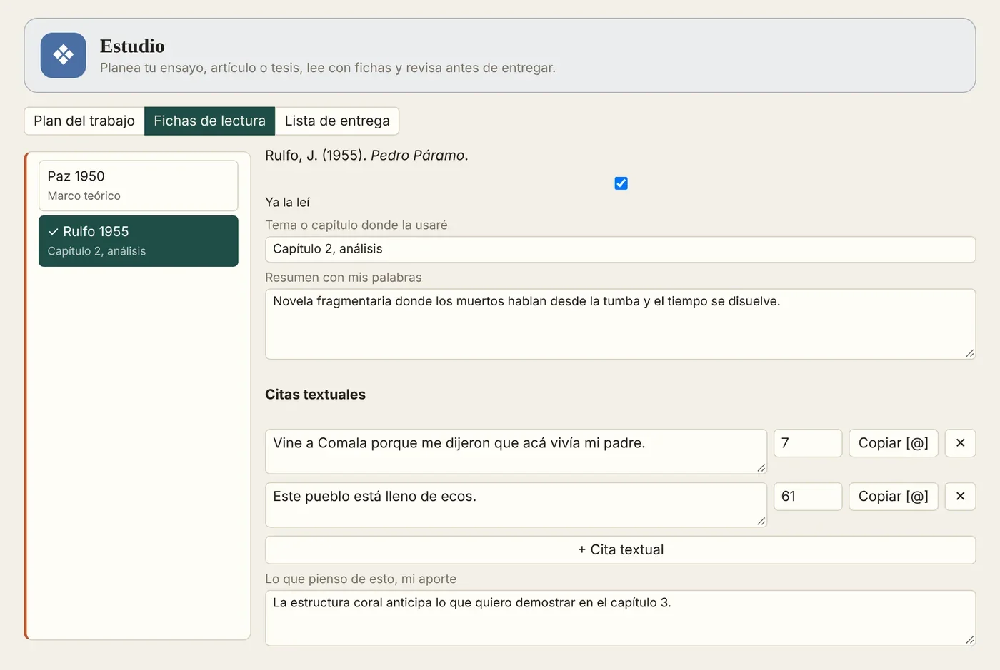
Lo vivido también se escribe
Un Cuaderno al estilo bullet journal con tu semana, tu mes y tu año. Un diario con fecha, ánimo y diez páginas listas para llenar. Una línea de vida, planes, hábitos e inspiración. Y lo que vives puede volverse historia.
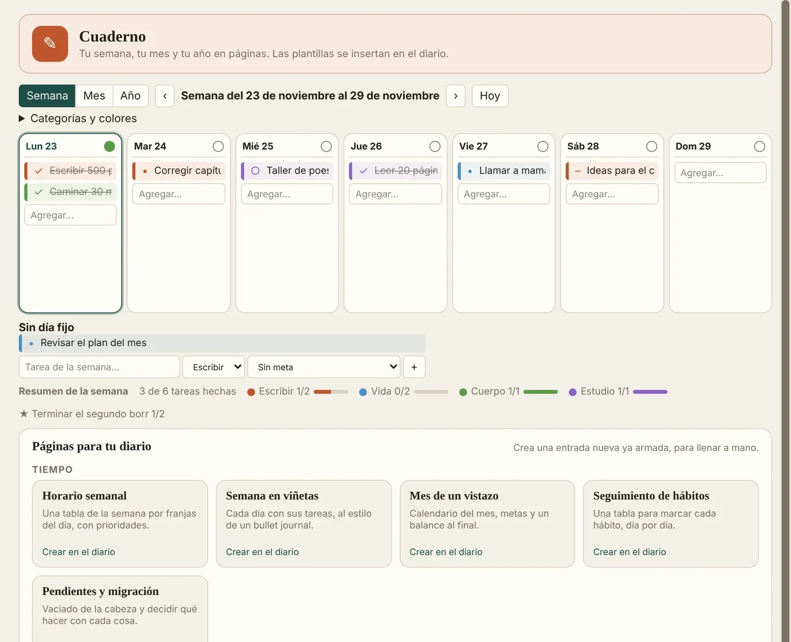

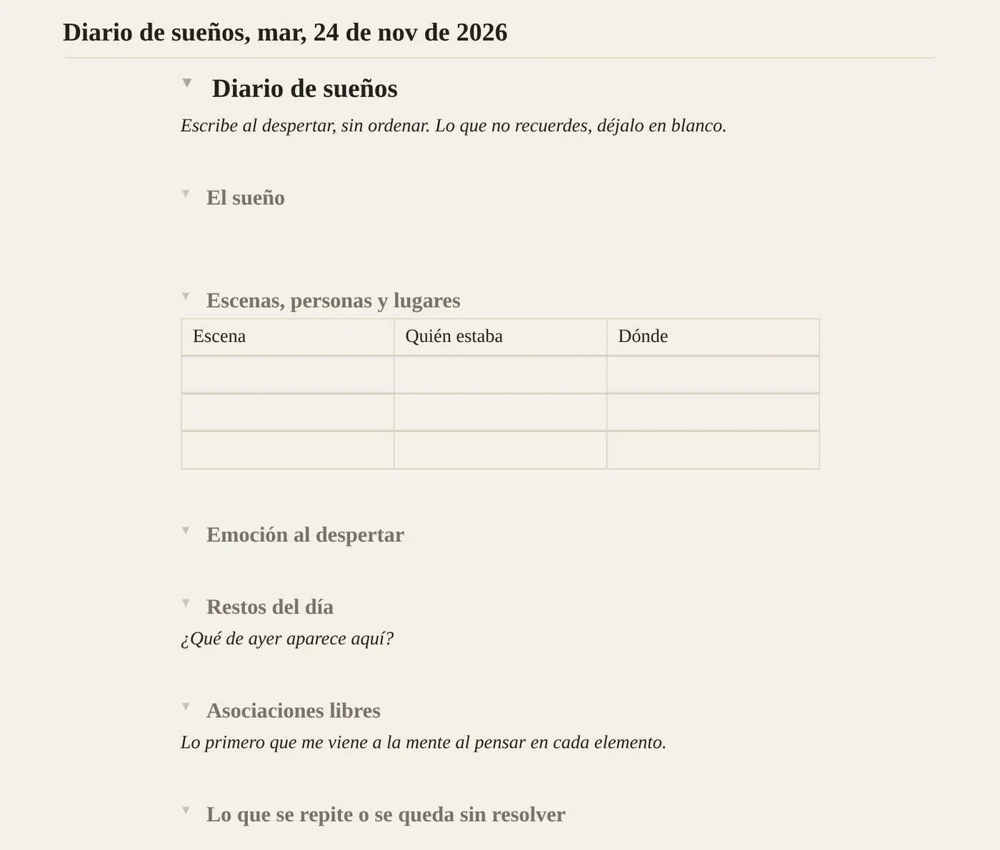
Del manuscrito al lector
Compila tu libro con formato y metadatos, o prepara cada texto para tu blog. Un calendario editorial te dice qué sale y cuándo, y la copia con formato pega directo en Substack, Medium, WordPress, Ghost o Blogger.
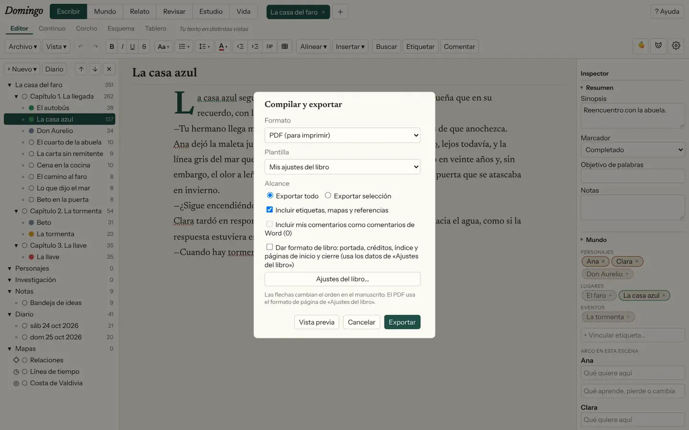
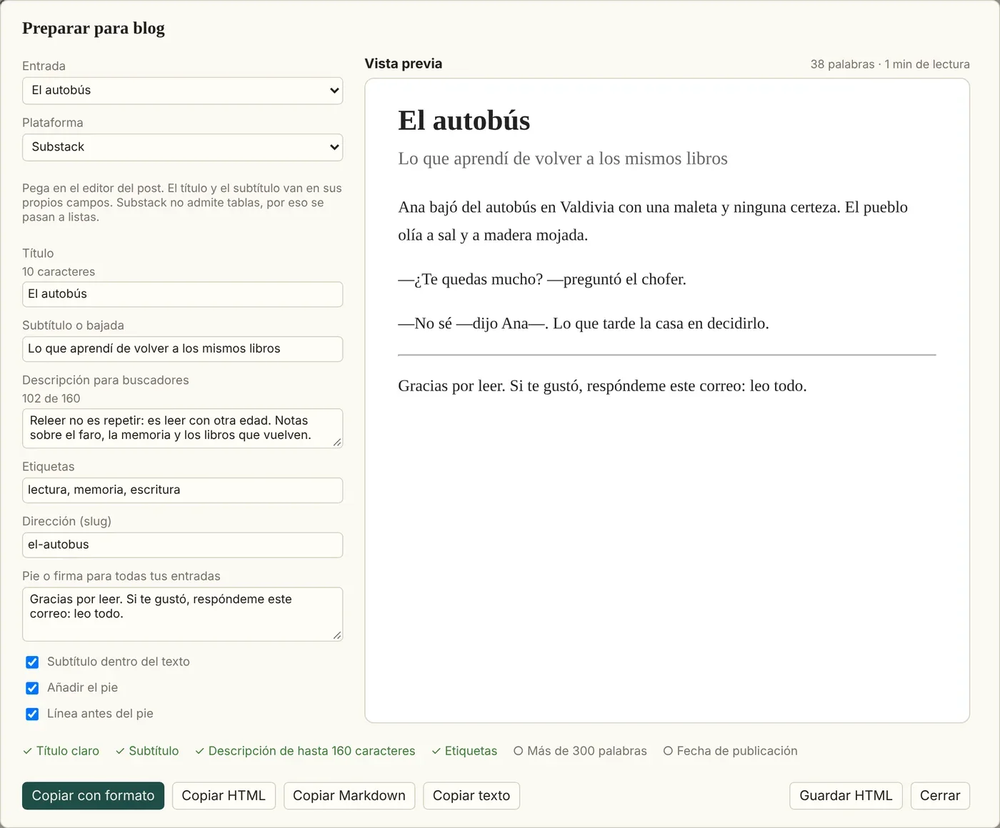
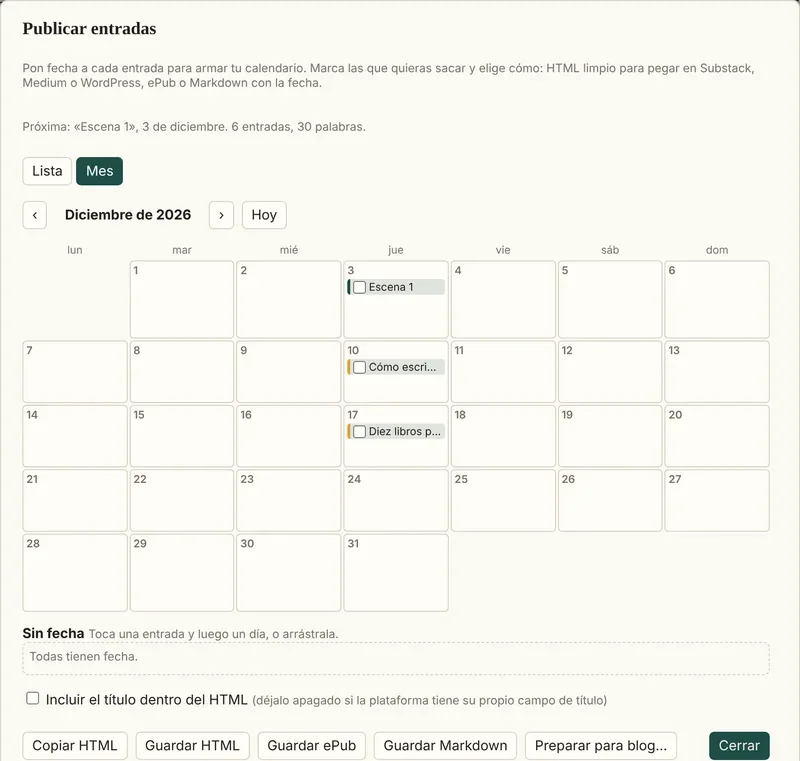
Aprende a escribir, no a usar la app
Los talleres tienen su propio botón, ✎ Talleres, junto a Ayuda. Un gato maestro con birrete explica cada formato y sus técnicas, y te propone ejercicios sobre tu propia vida. Cada taller crea un manuscrito tuyo que se conserva y recuerda dónde te quedaste.
La historia corta, en cinco sesiones
Si vas empezando, aquí está tu primer cuento: de una vivencia propia al texto terminado y exportado.
- Una idea que sale de tu vidaAnotas algo que viviste, lo conviertes en una pregunta «¿Y si…?» y armas el esqueleto de tu cuento.
- Tus personajes y su mundoDas vida a tu protagonista, a quien lo inspiró y al lugar donde pasa todo.
- Investiga e inspírateReúnes imágenes, frases y datos que alimentan tu historia, y ubicas lo importante en el tiempo.
- Escribe tu historiaEscribes las escenas una a una, sin corregir, con el material que ya reuniste.
- Revisa y terminaLees tu cuento completo, corriges lo que Domingo señala, guardas una versión y lo exportas.
Cada sesión dura unos 15 minutos. Puedes cerrar el taller cuando quieras y retomarlo en el paso donde lo dejaste.

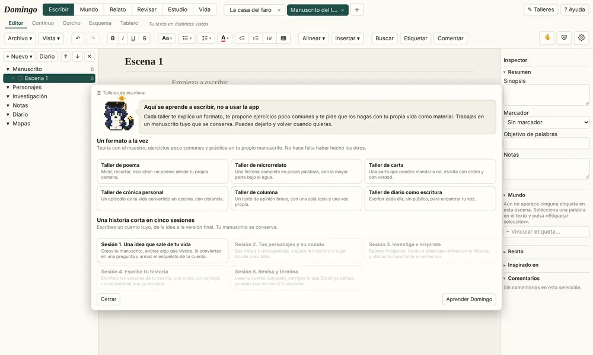
Talleres por formato
Poema, microrrelato, carta, crónica personal, columna y diario. Sesiones cortas, cada una en su propio manuscrito.
Sesiones de historia corta
Una idea que sale de tu vida, personajes, investigación, escritura y revisión. Tu cuento se queda contigo.
Partes para aprender la app
En ? Ayuda: Aprender Domingo, ocho partes de unos 5 minutos, y el Taller avanzado, siete partes para las herramientas complejas.
Aprende con los clásicos
Domingo trae obras de muestra con todas las herramientas ya usadas, como Don Quijote y La vida es sueño. Ábrelas para explorar sin riesgo para tus manuscritos.
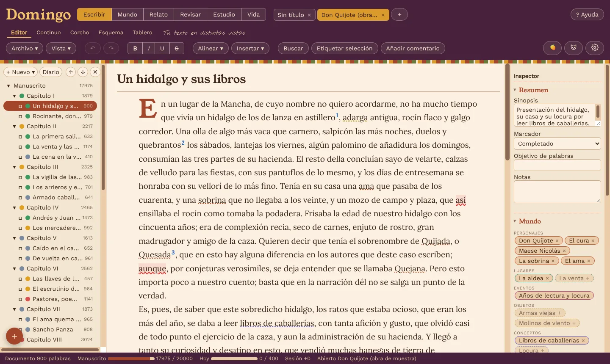